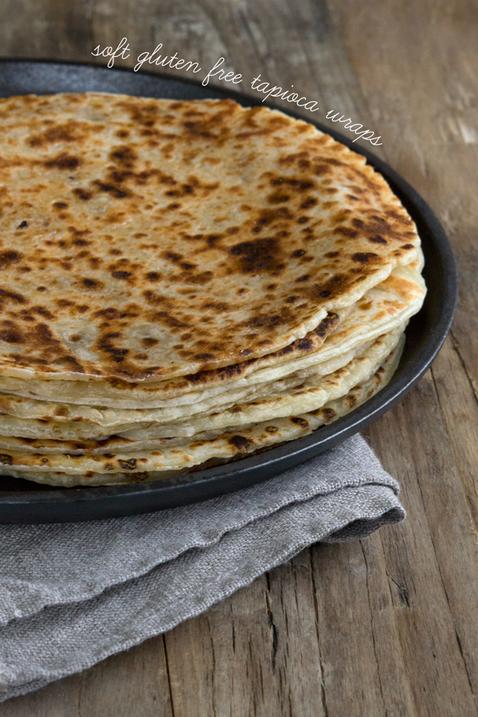

Back
Tapioca Wraps/Tortillas
Ingredients
- 1 cup milk
- 2 1/2 cups tapioca starch/flour, plus more for sprinkling*
- 1/4 teaspoon salt
- 3 tablespoons canola oil
- 1 egg at room temperature, beaten
- 7 ounces low-moisture part-skim mozzarella cheese, grated
- 2 ounces Parmesan cheese, finely grated (optional)

Instructions
- In a medium saucepan, bring the milk to a simmer over medium heat. As soon as the milk begins to simmer, turn off the heat and add the tapioca flour and salt, and then the oil. Mix to combine. The mixture will look curdled and will be difficult to bring together. Allow the dough to cool for at least 10 minutes before transferring it to the bowl of a food processor fitted with the steel blade. Pulse a few times to smooth out the dough. Add the beaten egg, and pulse until the egg is incorporated into the dough. Once the egg has been added, turn the machine on and allow it to work until the dough is smooth (2 to 3 minutes). It will be very thick and stretchy. Add both grated cheeses, and turn the food processor on and let it work until the dough is very smooth (about 2 minutes). The dough will be sticky, but will become less sticky as it cools. Use a wet spatula to remove it from the food processor. With wet hands or kitchen tools, divide the dough into two equal pieces, and wrap each tightly in plastic wrap. Place in the freezer to chill for about 30 minutes or in the refrigerator for 2 hours or up to overnight.
- Once the dough has chilled, heat a 10-inch cast iron skillet over medium heat (or a nonstick skillet over low heat). Unwrap one chilled piece of dough and place on a flat surface lightly sprinkled with tapioca flour. With a sharp knife or bench scraper, divide the dough into 5 equal pieces, each about 3 ounces. Dust each piece generously with tapioca flour, and roll out into a circle 8-inches in diameter, moving the dough often and sprinkling it with tapioca flour when necessary to prevent it from sticking.
- Carefully place the first circle of dough onto the hot skillet and allow it to cook until the underside is cooked and the wrap can be lifted easily with a wide spatula (about 1 1/2 minutes). Flip the wrap over and press down evenly with the spatula to sear the other side. Cook until the underside is set (about another 40 seconds). Remove from the skillet and cover with a moist tea towel. Repeat with the remaining 4 pieces of dough, and then with the other half of dough.
- Serve the wraps immediately, or wrap them tightly in plastic wrap and store in the refrigerator for up to 1 week (or in the freezer, wrapped in a freezer-safe container, for longer). When you are ready to use a previously refrigerated wrap, warm in a hot cast iron skillet for a few second until the wrap has become pliable again (about 30 seconds).
Source